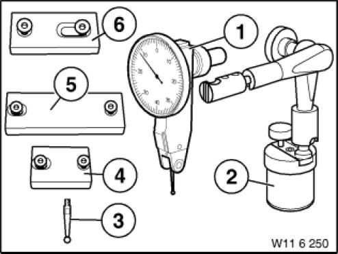

11 6 250 Measuring Device
11 6 250 Measuring device
0493143
Minimum set: Mechanical tools
MW

NOTE: (Measuring device) Sensing arm measuring device with small tripod for measuring tooth flank and side clearance on counterbalance shafts, camshafts and crankshafts.
SI number: 01 04 98 (304)
Consisting of:
1 = 0493144 Dial gauge
NOTE: (Dial gauge) With 0.8 mm measuring range in each direction
2 = 0493145 Tripod
NOTE: (Small hydraulic tripod with magnetic base)
3 = 0493146 Sensor
NOTE: (Sensor ) Sensor arm 11.5 mm
4 = 0495214 Plate
NOTE: (Fixture) Engine: M47T2; M57T2; S85
5 = 0495468 Plate
NOTE: (Fixture M7) Engine camshaft: M67TU
6 = 0495470 Plate
NOTE: (Fixture M8) Engine crankshaft: M67TU